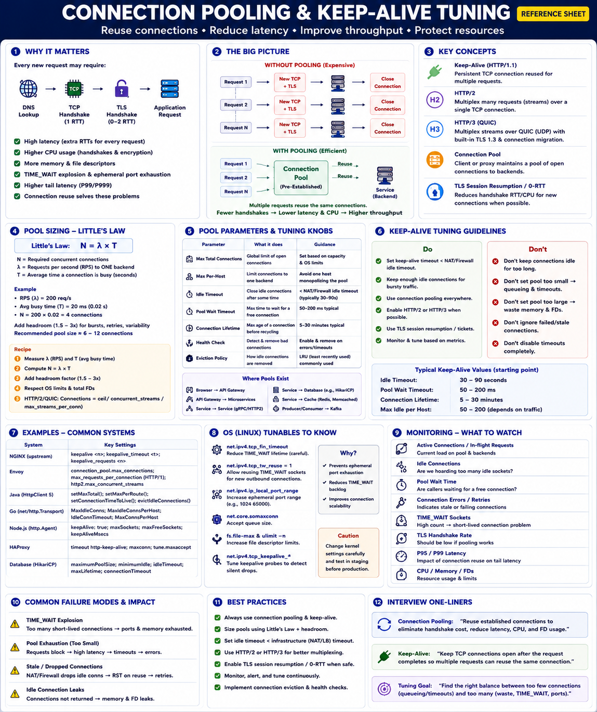

Staff Engineer Reference — Networking & Performance
Every new network connection without pooling incurs a full setup chain:
If this happens for every request:
TIME_WAIT sockets❌ Without Pooling
✅ With Pooling
A connection pool is a collection of pre-established, reusable network connections maintained by a client, proxy, or application.
Without Pool
With Pool
The connection remains open for future requests, eliminating repeated handshake overhead.
Keep-Alive keeps a TCP connection open after a request completes so it can serve multiple requests.
Without Keep-Alive
With Keep-Alive
| Protocol | Multiplexing | Connections Needed | Key Trait |
|---|---|---|---|
| HTTP/1.1 | ❌ One request/connection | Multiple (pipelining unreliable) | Keep-Alive essential for any reuse |
| HTTP/2 | ✅ Many streams / 1 TCP | 1–4 | Multiplexed streams; better BW utilization |
| HTTP/3 (QUIC) | ✅ Per-stream independence | 1 | Built-in TLS 1.3, connection migration, 0-RTT |
Reuse HTTP/TLS connections to reduce page load latency.
Prevents handshake storms; improves backend throughput. Tools: NGINXEnvoyHAProxy
Reuse gRPC/HTTP2 channels to reduce inter-service latency.
Databases cannot handle unlimited connections. Tools: HikariCPPgBouncerRDS Proxy
Very high QPS — reusing connections avoids excessive socket churn.
Persistent broker connections provide stable partition ownership and lower message latency.
| Parameter | Purpose |
|---|---|
| Max Connections | Upper limit of open connections |
| Max Connections per Host | Prevents one backend from monopolizing the pool |
| Idle Timeout | Closes unused connections after a period |
| Pool Wait Timeout | Maximum time to wait for an available connection |
| Connection Lifetime | Refreshes long-lived connections |
| Health Check | Removes broken connections from the pool |
Idle Timeout Too Short
Idle Timeout Too Long
A balanced timeout (often 30–90 seconds) avoids both extremes.
| Setting | Typical Range | Why |
|---|---|---|
| Keep-Alive Timeout | 30–90 s | Balance reuse and idle resource consumption |
| Max Idle Connections | 50–200 | Depends on traffic volume |
| Pool Wait Timeout | 50–200 ms | Avoid long request queues |
| Connection Lifetime | 5–30 min | Refresh aging connections |
| TCP Keep-Alive Probe | 30–60 s | Prevent silent NAT drops |
Instead of a full TLS handshake on every reconnect:
Cause: Too many short-lived connections
Effects: File descriptor pressure, ephemeral port exhaustion, increased latency
Solution: Connection pooling, HTTP Keep-Alive, gRPC channels
Cause: Pool too small for traffic
Effects: Requests wait for free connections → timeouts
Solution: Increase pool size, autoscale services, monitor pool wait time
Cause: Idle connection dropped by NAT → RST sent when reused
Solution: Keep-alive probes, connection validation before reuse, retry on failure
Cause: Connections never returned to pool
Effects: Memory growth, resource exhaustion, reduced throughput
Solution: Proper resource cleanup (try-with-resources), leak detection, monitoring
| Metric | Indicates |
|---|---|
| Active Connections | Current pool utilization |
| Idle Connections | Resource usage |
| Pool Wait Time | Pool saturation (alert if > 100 ms) |
| Connection Checkout Latency | Time to acquire a connection |
| Connection Errors | Failed/refused connections |
| TIME_WAIT Sockets | Connection churn — too many = pool too small |
| TLS Handshake Count | Connection reuse effectiveness |
| P95/P99 Latency | User-perceived performance |
| Layer | Why Pooling Helps | Tools / Examples |
|---|---|---|
| Browser → API Gateway | Reuse TCP/TLS, faster page loads | HTTP/2, Keep-Alive |
| API Gateway → Services | Avoid handshake storms | NGINX, Envoy, HAProxy |
| Service → Service | Efficient gRPC/HTTP2 communication | gRPC channels, HTTP/2 |
| Service → Database | Protect DB from excessive connections | HikariCP, PgBouncer, RDS Proxy |
| Service → Cache | High-QPS connection reuse | Redis client pools |
| Kafka Clients | Persistent broker communication | Kafka producer/consumer |
| CDN → Origin | Warm TLS connections to origin | Cloudflare, Fastly |
| Benefit | Trade-off |
|---|---|
| Lower latency | More idle memory usage |
| Lower CPU | More open file descriptors |
| Better throughput | Requires careful sizing |
| Fewer handshakes | Risk of stale connections |
| Lower TIME_WAIT count | Pool management complexity |
TIME_WAIT explosions?| Level | Thinking Pattern |
|---|---|
| Junior | "I'll open a new database connection for each request. It's simpler." |
| Senior | "I'll add HikariCP with pool size 10. That should be fine for most cases." |
| Staff | "I use Little's Law to right-size pools at every layer — service→DB, service→service, gateway→backend. I monitor pool wait time, TIME_WAIT counts, and TLS handshake rate. I configure keep-alive timeouts shorter than any NAT/LB timeout upstream. For HTTP/2 and gRPC I reduce connection count drastically while increasing stream concurrency. I also plan for stale connection handling, validate before reuse, and tune TCP keep-alive probes to survive NAT drops in mobile/edge environments." |
Pool Size ≈ RPS × Avg Busy Time) is the practical starting point for pool sizing with 1.5–2× headroom.